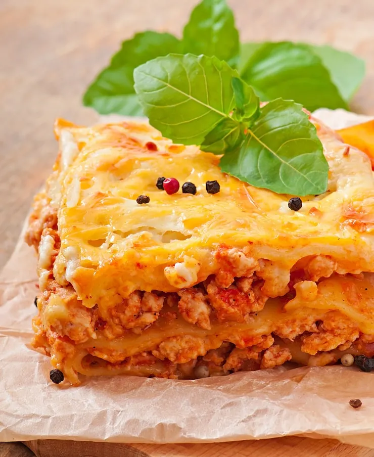

Home
Lasagna

Description
This is a rich, cheesy, and hearty lasagna recipe perfect for a family dinner
or a special gathering. It features layers of fresh pasta, seasoned meat sauce,
and a creamy ricotta and mozzarella cheese blend. It takes a little effort,
but the results are always worth it!
Ingredients
- 1 pound ground beef
- 1 (15 ounce) can tomato sauce
- 9 lasagna noodles
- 1 (15 ounce) container ricotta cheese
- 1 egg
- 2 cups shredded mozzarella cheese
Steps
- Eme kanan
- Cook the ground beef until brown, then drain excess fat. Stir in tomato sauce and simmer.
- In a separate bowl, mix the ricotta cheese and egg.
- Preheat oven to 375°F (190°C).
- Assemble the lasagna by layering meat sauce, noodles, ricotta mixture, and mozzarella cheese in a baking dish.
- Cover the dish and bake for 30 minutes, then uncover and bake for 15 more minutes until the cheese is bubbly.
- Let stand for 10 minutes before serving.